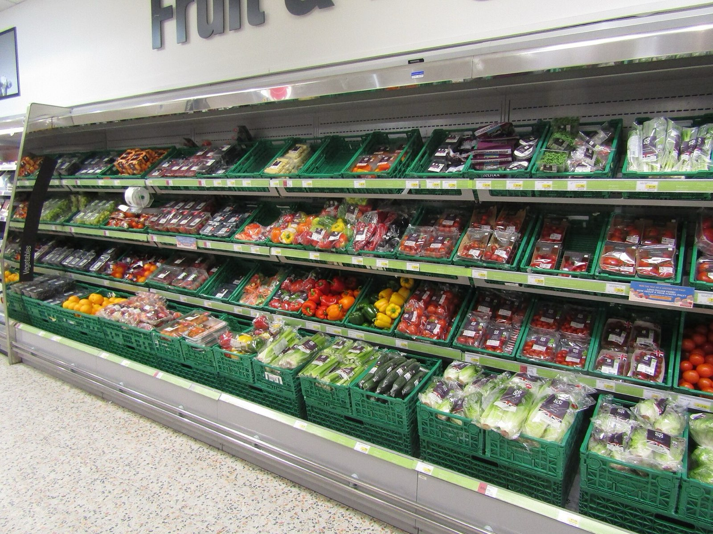
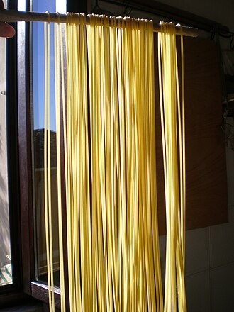
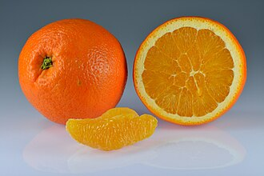
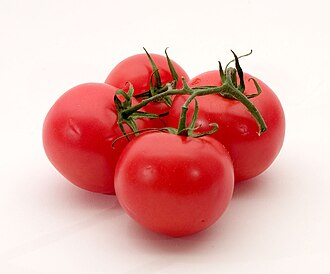

Point rates every food product in a shop against one public definition of sustainability and proves each score, so shoppers, retailers and investors can trust the number.
Founded at the University of St. Gallen (HSG) · Pilot planned in Ticino, 2027
Live demo. Try it: tap a product, change the goal.

for one person to check every product in Ticino by hand.Team estimate, 2020 business plan
average correlation between leading ESG ratings, against 0.99 for credit ratings. And they rate companies, not products.Berg, Kölbel & Rigobon, Review of Finance, 2022
ways to verify a label after purchase. Sustainability is a credence good: the claim comes from the seller.

Type “pasta” as you always would. Point knows the shop you are in.

Every product in that category, scored on climate, water, land, packaging, energy and transport.

The most sustainable option and why. Products without verified data are shown, never recommended.
Rating disagreement comes from scope and measurement. Point fixes both: one public definition sets the scope, one open formula per dimension sets the measurement.
The European Commission’s definition of sustainable food, mapped through peer-reviewed research.
Every dimension has a published formula. Anyone can rerun it.
Producer data is checked at the source and never published.
A zero-knowledge proof shows the score is correct without revealing the data.
License the scores for shelves and online shops, starting with one challenger chain in Ticino.
Benchmark reports for brands. Product-level data for banks, asset managers and ESG raters, who today only see company-level ratings.
A free app builds reach and shows what people actually want. A premium tier adds personal goals.
Like Bloomberg in financial data: the professional user pays for information it cannot gather alone. Producers never pay to be ranked, which avoids the conflict behind issuer-paid credit ratings.
Proxying, presented at BoldBrain.
One retail partner, full shelf coverage, first data clients.
National roll-out with retailers and brand benchmarks.
One definition, applied across the European market.
CEO · Sustainability method
Technology · AI engineer
Co-founder
Co-founder
Co-founder
We are looking for investors and one retail partner who want to set the standard for verified sustainability in food.